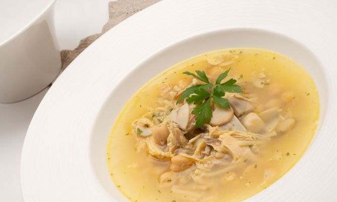

Soup

Description
Homemade chicken soup, ideal for cold weather.
Ingredients
- Chiken breast
- Carrots
- Celery
- Onion
- Tomato
- Soup pasta
- Seasonings
Steps
- Boil the chicken and the vegetables together for 45 mins
- Take the vegetables off
- Filter the boiled soup
- add the already cooked chicken in the filtered soup
- Add pasta and seasoning to taste, boil for 7-8 mins
- Serve
Return to main page